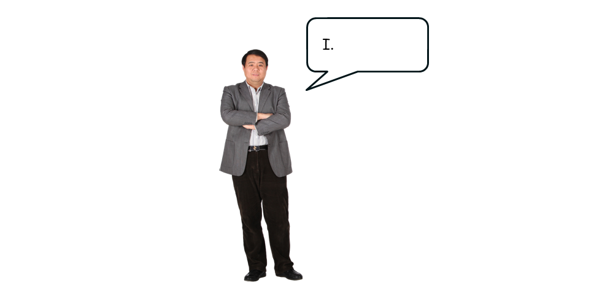
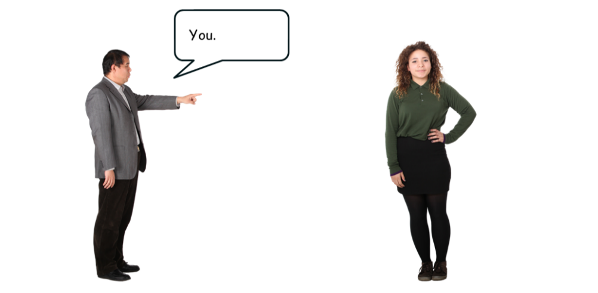
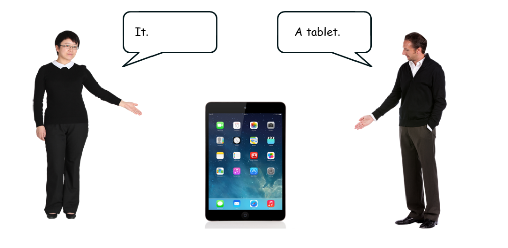

Activity 6: What can you use?
Audio: What can you use?
What can you use?
Speed:
Review What can you use?,. Repeat the sounds you hear.
| Speaking partner A | Speaking partner B |
|---|---|
| What can you use? | I can use a phone. |
| What can you use? | I can use a tablet. |
| What can you use? | I can use a computer. |
| What can you use? | I can use a laptop. |
Pronouns
Use pronouns to speak about different things.



Answers
Listen to the audio.
Read the verbs.
Repeat the verbs.
Listen to the audio. What can you use?able 23: What can you use?
| Speaking partner A | Speaking partner B |
|---|---|
| What can you use? | I can use a phone. |
| What can you use? | I can use a tablet. |
| What can you use? | I can use a computer. |
| What can you use? | I can use a laptop. |
Show transcript – What can you use?
Listen, read and repeat.
A: What can you use?
B: I can use a phone.
A: What can you use?
B: I can use a tablet.
A: What can you use?
B: I can use a computer.
A: What can you use?
B: I can use a laptop.